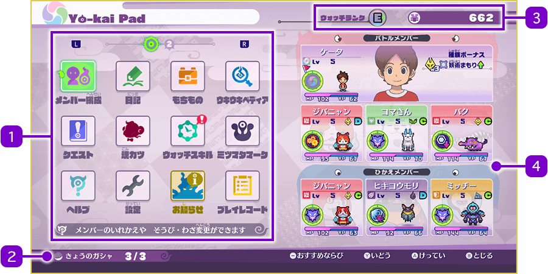
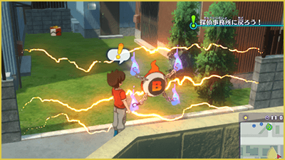
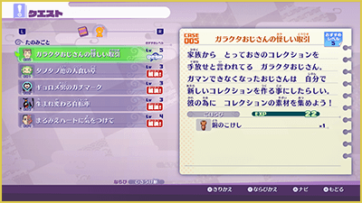
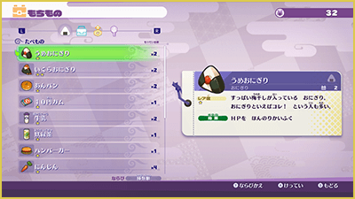
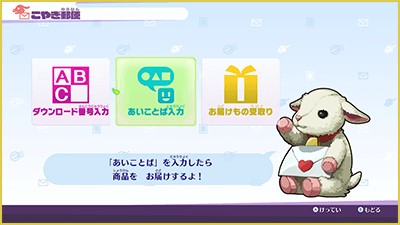

Yo-kai Pad
Pantalla del Yo-kai Pad
Al pulsar Ⓧ en la zona abierta, se abrirá el Yo-kai Pad, desde donde podrás usar diversas aplicaciones.
Selecciona una app con la cruceta o el stick izquierdo y pulsa Ⓐ para confirmar.

- 1Aplicaciones
-
Muestra las distintas funciones del Yo-kai Pad. Si tienes 13 o más apps, puedes cambiar de página con L y R. Para cambiar el orden de las aplicaciones, selecciona una con Ⓨ y presiona Ⓨ (o Ⓐ) sobre otra para intercambiar sus posiciones.
※ Pulsa el botón − para restablecer el orden predeterminado
- 2Tiradas de hoy
-
Muestra las tiradas restantes y el límite diario para usar la Expendekai.
También puede mostrar información sobre bonus de puntos. - 3Rango del Yo-kai Watch y dinero (en ¥)
- 4Equipo principal y reserva
-
Muestra el estado de los miembros activos y en reserva. Incluye el medidor de Animáximum de cada personaje.
El líder del grupo estará marcado con el icono de una bandera .
.
Rango del Yo-kai Watch y Relocerrojos
El "Rango del Yo-kai Watch" representa el nivel de tu Yo-kai Watch y aumenta al completar misiones específicas. Subir de rango te permitirá abrir las puertas que tengan un "Relocerrojo" y facilitará la detección de más Yo-kai con el Radar Yo-kai.

Introducción de las Aplicaciones
Por otra parte, para obtener más información sobre las aplicaciones "Equipo", "Habilidades" y "Almas", consulta las páginas correspondientes; para "Intercambio de Arks" y "Escaneo de Arks", consulta la página "Intercambios y NFC".
Misiones
Consulta las misiones en curso o completadas. Cambia entre los 3 tipos con L y R. Al seleccionar una misión aceptada con Ⓐ, la guía de Naviwoof apuntará directamente hacia ese objetivo.

| Historia | Al completarlas, la historia avanza. |
|---|---|
| Peticiones | Son misiones que te encargan los habitantes de la ciudad y otros personajes. Al completarlas, recibirás recompensas como experiencia y objetos. |
| Casos extraños | Son casos paranormales publicados un el sitio web de fenómenos extraños. Al resolverlos, recibirás recompensas como EXP y objetos. |
Inventario
Muestra tus objetos y te permite usar comida, herramientas o cambiar equipamiento.
Usa L y R para navegar por las categorías.

| Comida | Recupera PV y PY. |
|---|---|
| Objetos | Artículos con diversos efectos, como los "Exporbes" para ganar experiencia. |
| Equipamiento | Armas o accesorios que mejoran las estadísticas de tus personajes. |
| Objetos clave | Artículos importantes obtenidos durante la historia o en misiones. |
Diario
Permite guardar tu progreso en el juego.
Ajustes
Configura las opciones del juego. Usa L y R para alternar entre ajustes de controles y ajustes generales. Cambia los valores con la cruceta / stick y sal con Ⓑ para guardar los cambios.
※ Pulsa Ⓨ para restablecer todos los valores por defecto
Ayuda
Consulta tutoriales y guías sobre los controles y la jugabilidad.
Trofeos
Revisa los trofeos que has conseguido a lo largo del juego.
Marcas Mitchy
Muestra las "Marcas Mitchy" que has descubierto usando el Modo Reloj.
Oficina de Correos
Introduce códigos de descarga o contraseñas para recibir objetos. Una vez introducidos correctamente, recoge tus recompensas en la sección "Recibir entregas".

Música
Escucha la banda sonora del juego. Desbloqueas las canciones canjeando el objeto "Tarjeta músical".
Álbum
Una enciclopedia con datos de los Yo-kai y humanos que encuentras.
La información se actualiza al verlos o entablar amistad con ellos.
Estadísticas
Consulta estadísticas y registros detallados de tu partida.
Tesoros
Revisa las fotografías de pistas sobre tesoros ocultos que vayas encontrando a lo largo del juego.
Noticias
Consulta las próximas actualizaciones programadas para el juego.